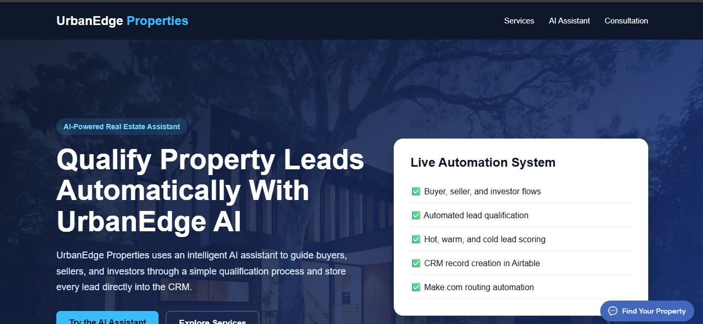
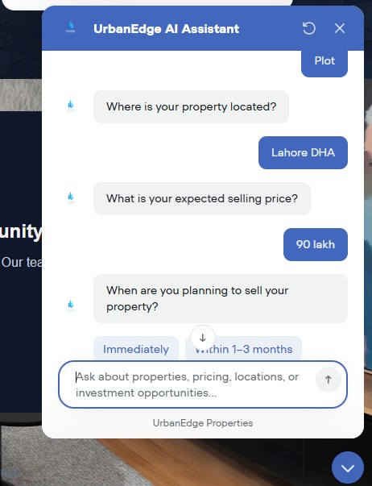
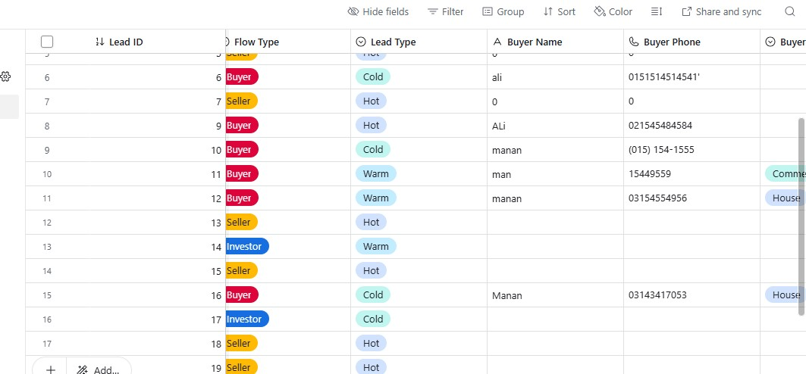
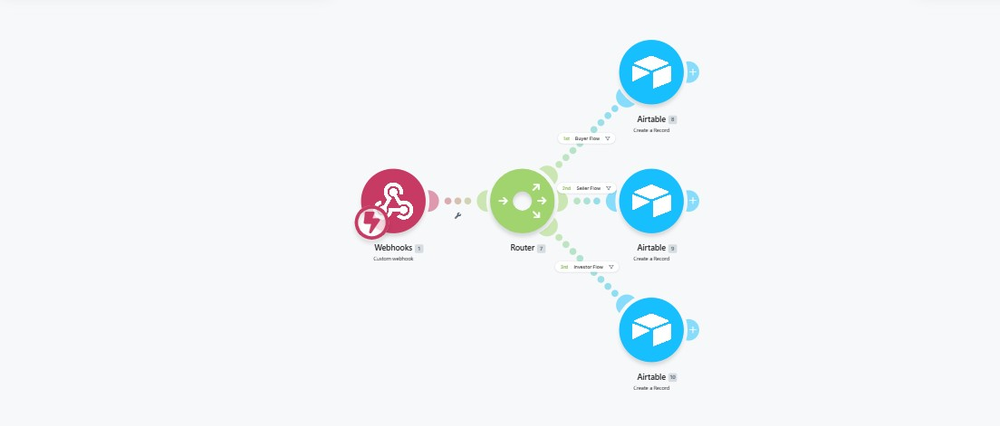
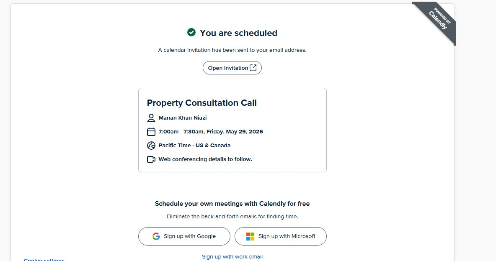
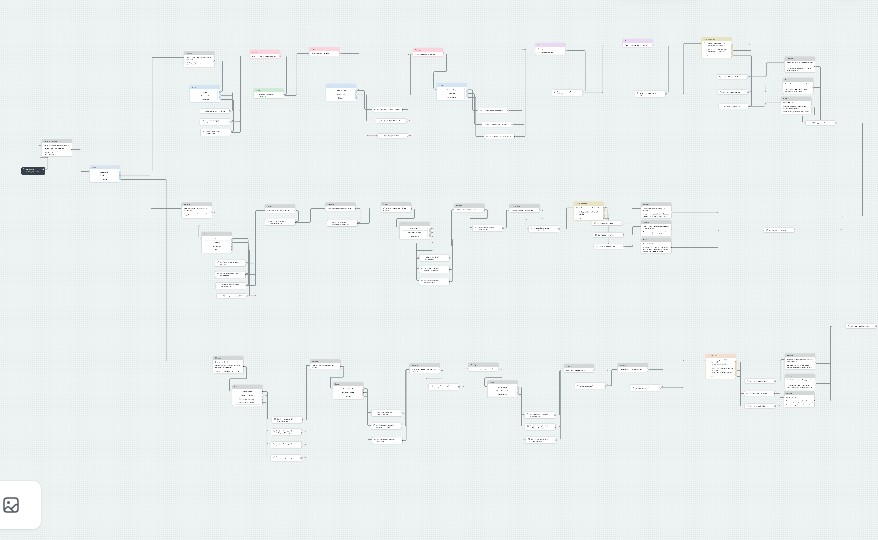

AI & automation
UrbanEdge AI real estate assistant
A fictional real-estate business case: an AI-powered lead qualification and customer interaction system connecting a conversational assistant to automated backend workflows.

Overview
UrbanEdge is a fictional real-estate business built to demonstrate how AI can be connected to real business workflows — not just as a chatbot, but as a system that qualifies leads, captures information, and moves them toward a booked appointment automatically.
Problem
Real-estate businesses can receive enquiries from buyers, sellers, and investors without having a consistent process for identifying lead intent, collecting relevant information, and organizing those enquiries for follow-up. A simple chatbot may answer questions, but it does not solve the wider workflow problem of qualification, routing, CRM capture, and appointment scheduling.
Approach
I designed the system as an end-to-end workflow: the AI assistant starts the conversation, identifies whether the visitor is a buyer, seller, or investor, collects relevant lead information, and guides qualified users toward the appropriate next step. Make.com connects the conversational layer with Airtable, where lead information is structured and retained for follow-up.
What it does
- Provides a conversational AI assistant for website visitors interested in buying, selling, or investing in property.
- Guides users through role-specific conversations and collects relevant information such as property type, location, budget, selling timeline, and contact details.
- Uses Make.com automation to route lead information according to the selected buyer, seller, or investor flow.
- Creates structured lead records in Airtable so captured information can be organized for follow-up.
- Connects qualified users to an appointment-booking flow when a consultation is appropriate.
Screenshots
UrbanEdge pulls together several tools, so here's a look at each part of the system.





What I learned
This project strengthened my understanding of how conversational AI, automation, and structured data need to work together as one system. I learned that designing the conversation is only one part of an automation project; the more important challenge is creating reliable handoffs between the AI assistant, automation logic, CRM records, and user actions. I also gained practical experience in testing different conversation paths, handling structured lead information, routing data based on user intent, and connecting the workflow to an appointment-booking process.